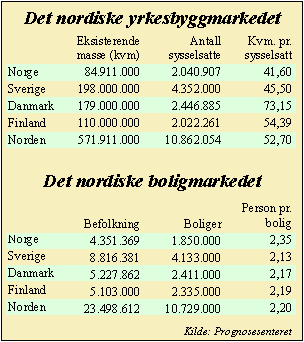

![[Forrige artikkel]](/me/ts/ne/gifs/prev.gif)
![[NE hjemmeside]](/me/ts/ne/gifs/ne-small.gif)
![[Neste artikkel]](/me/ts/ne/gifs/next.gif)
Av Egil Wettre-Johnsen
I følge Prognosesenteret er dagens byggenivå i Norge oppe på et riktig nivå. Det vil si at det årlig bygges rundt 2,7-2,8 millioner kvadratmeter næringsbygg og 20.000 boliger. Senteret mener det årlig er behov for å sanere en million kvadratmeter med næringsareal.
I tillegg krever veksten i sysselsettingen rundt 840.000 nye kvadratmeter i året. I sum blir dette et årlig behov på 2.040.000 nye kvadratmetre, men Prognosesenteret har lagt inn en årlig sentraliseringseffekt på 200.000 kvadratmeter som kommer i tillegg. I tillegg kommer også behov for å løfte arealet pr. ansatt i Norge opp på et Nordisk gjennomsnittnivå. Over en 30 års periode representerer dette et årlig arealtilskudd på 750.000 kvadratmeter.
I sum blir dette 2,8 millioner kvadratmeter næringsareal, som omtrent tilsvarer dagens nybygging på 2,7 millioner kvadratmeter.
En oversikt over kvadratmeterforbruket pr. ansatt viser at norske arbeidstakere har minst boltreplass - eller har minst dødareal rundt seg, i forhold til sine nordiske kolleger.
I gjennomsnitt har hver nordmann 11,1 kvadratmeter mindre areal enn gjennomsnittet i Norden. Hver sysselsatt i Norge disponerer 41,6 kvadratmeter, mens det nordiske gjennomsnittet ligger på 52,7 kvadratmeter. Mest har danskene med 73,15 kvadratmeter.
